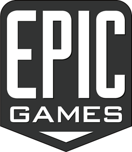
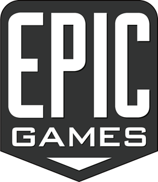

ZOYOCO
ZOYOCO


Overcooked! 2
En stock
Descarga inmediata

 


Simulación
Multijugador
Cooperativo
Un jugador
...
| Requisitos Minimos Windows | Requisitos Minimos Mac | Lanzamiento | |
|---|---|---|---|
| Sistema Operativo | WIN7-64 bit | OSX 10.12.6 - Sierra | 3/8/2016 |
| Procesador | Intel i5-4590 | Intel Core i5 @2.7Ghz | |
| Memoria | 4096 MB de RAM | 8 GB de RAM | |
| Gráficos | GeForce GTX 650 | GeForce GT 640M 512Mb | |
| DirectX | Versión 11 | - | |
| Almacenamiento | 3 GB de espacio disponible | 3 GB de espacio disponible |
Descripcion de juego
Overcooked es un videojuego de cocina desarrollado por Ghost Town Games y publicado por Team17. Es un juego cooperativo local en el que dos jugadores toman el rol de chefs y deben cocinar los pedidos en el tiempo establecido mientras se mueven entre plataformas, portales, escaleras que se mueven, etc. Fue lanzado para Windows, PlayStation 4 y Xbox One en 2016. Fue lanzado en Nintendo Switch el 27 de julio de 2017. Overcooked recibió críticas favorables, recibió 4 premios en los Premios BAFTA de Videojuegos de 2016 y ganó premios al Mejor Juego Británico y al Mejor Juego Familiar. Tuvo una secuela llamada Overcooked 2 en agosto de 2018.
Jugabilidad
En Overcooked los jugadores deben preparar comidas cogiendo los ingredientes en los lugares indicados para luego ir a cortar, cocinar, poner en un plato y servir el plato en los lugares correspondientes. Existe también un basurero para eliminar la comida mal hecha (con uno o varios ingredientes de más o que se quemó). Los chefs deben trabajar para completar los pedidos antes que se acabe el tiempo, los platos bien hechos servidos darán monedas con bonificación por velocidad, mientras que los mal hechos no ganarán monedas. El objetivo del juego es ganar la mayor cantidad posible de monedas. Al final de cada nivel los jugadores reciben de una a tres estrellas según las monedas que hayan recolectado.
-
Music
-
Acerca de ZOYOCO
Zoyoco fue fundada en España en 2022. Actualmente tenemos tiendas en Sol,Luna,Marte.
Zoyoco vende una gran variedad de productos de entretenimientoa un precio muchisimo menor que el restos de paginas. -
Franquicias
¿Interesado en una franquicia Zoyoco?